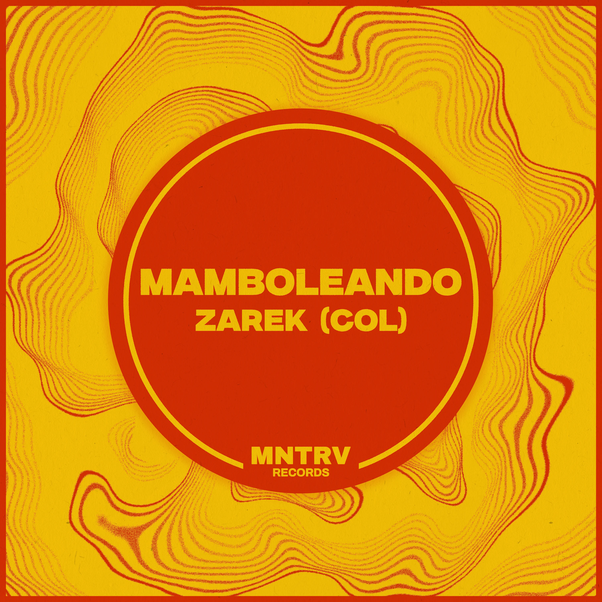

Description
Mamboleando by Zarek (COL), a Colombian producer based in London, is a debut release for MNTRV records - a label whose identity takes inspiration from the hypnotic repetition of a mantra, and the groove of electronic music. This track combines a tech house rhythm with latin percussion, talkative saxophones, and background vocals that give the track its enveloping and energetic character. Ideal for clubs, afterparties or festivals - Mamboleando is inspired by sounds from Latin Jazz and is a fusion created for the body and for the dancefloor.
Artwork / Image
